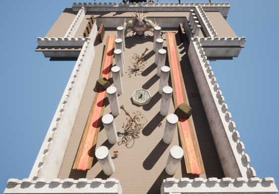

Fractured Time - Level Design

Fractured time is a level design project that I decided to create to both improve my skills in level design
and to learn how to use Unreal Engine as this is the first project that I have done in UE5.
The main idea of the level is that the player movement is simplistic with double jump, sprint and crouch fucntions.
The level itself features different themed areas from history converging into a single point.
all visual assets were from asset packs on the Unreal Engine store and none of them are my own personal work.
Above are the initial sketches that were drawn up for the level which a lot of the layout and ideas were
kept throughout the development of the level. Luckily when starting the project, I already had
different asset packs on Unreal which helped with creating visual aspect of the level.

The first flythrough of the introduction to the level includes the spawn, first encounter and
entrance to the next section of the level being the castle.

The next section is the castle themed area which includes an open village district where the player
use the houses as cover and find different pickups to aid them in the encounter. After this,
the player will encounter the convergence room. The player will need to choose
whether to go through the Olympus path or the Viking path.

The Olympus path includes two encounters, one being in a small room, and the other being
found within a circular arena. Once the player finishes both encounters, there is a healing room
for them to replenish health before the next area.

The Viking path also includes two encounters which vary is size and shape. The first encounter
is a longer path while the second encounter is a donut shaped room as the centre
is a large rock structure. There is also a healing room after both encounters.

After the player finishes the side that they chose, they will find themselves in a new encounter
which acts as the convergence room to bring both paths back into one.
Once this encounter is completed, then the player will enter the final room
before they finish the level.
After creating the first design of the level in Unreal Engine, the main focus was
to revamp the encounters as they were very basic and didn't allow
for the player controller to utilize the movement options.
The top image is the original layout of the first encounter and the bottom image
is the first encounter that has been remade to incorporate the movement
options. The encounter also has pickups and enemies placed.
Every encounter was remade and had pickups and enemies place within them.
Olympus Encounter
Viking Encounter
Convergence Encounter
Throne Encounter
Overall, I have been able to expand my knowledge especially in the field of Unreal Engine
and level design as this was the first time using Unreal Engine and creating a level
for a first person shooter genre of game. While I am proud of what I have created,
I know for certain that there is still a lot for me to learn so this project
was a great inital step in terms of level design and using Unreal Engine.